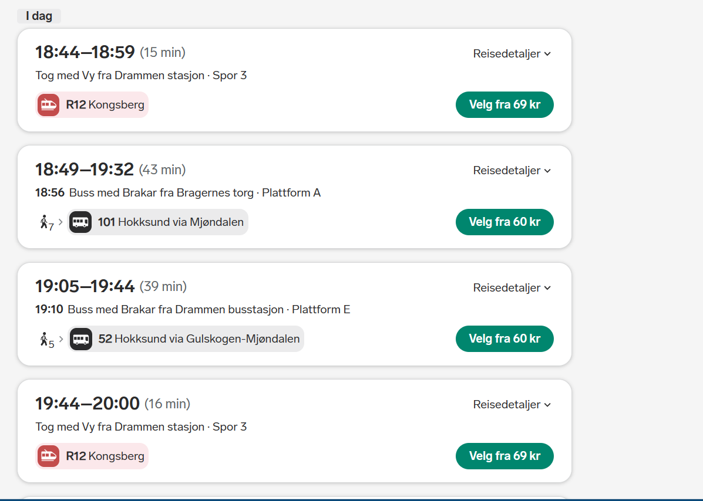

Hvordankjøpe en bussbillet på Vy.no
Det å kjøpe en bussbillet på nett er egentlig ganske lett. Med internettet så har dette gjort prossesen av å kjøpe bussbillet mye enklere.
- Først gå inn på nettsiden Vy
- Når du først kommer inn på vy.no, så kommer du til å se noen ting. Vi vil fokusere på hvor du vil reise fra, og hvor du vil til

- Etter å ha funnet denne så søker du hvor du vil gå med tiden, og så trykk enter. Etter dette så velger du en tid som bussen går fra.

- For å faktisk bestille billeten så må du finne den, og så gå til bestillingen og betale for den
- Gratulerer, nå har du en billet, og det som er viktig nå er at du husker bussnummeret. God turer!
Her er noen eksempler på veier og priser!
| |09:27-10:04| |
|60kr| |
|Hokksund Stasjon - Drammen Stasjon| |
| |10:30-20:04| |
|1278kr| |
|Oslo S - Trondheim S| |
| |12:53-19:06| |
|1021kr| |
|Hokksund Stasjon - Bergen Stasjon| |
Her er litt ekstra informasjon for dere som er interesert